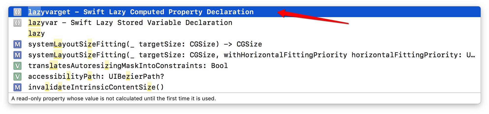
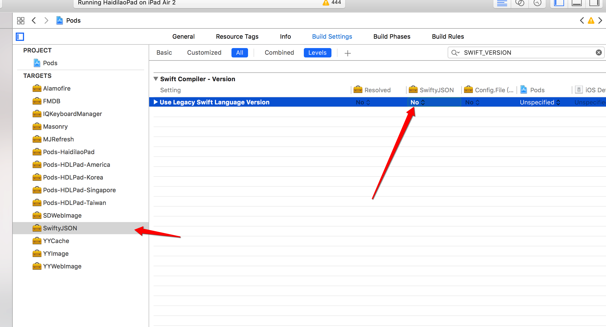

#selector集中起来管理
参考微博中第二点

关于Xib的使用问题
老生常谈的问题了,看个人喜好,不过尽量让其他人看懂,遵守xib规范.
备注:
1. IBInspectable / IBDesignable
2. 优雅地自定义XibView关于什么时候提取出方法
一个函数如果行数过长不便于阅读,可以按照步骤抽取出字方法
如果一个功能有2个以上地方用到需要抽取为一个方法多种样式Cell如何配置
撕逼未完....
#selector集中起来管理
参考微博中第二点
关于Xib的使用问题
老生常谈的问题了,看个人喜好,不过尽量让其他人看懂,遵守xib规范.
备注:
1. IBInspectable / IBDesignable
2. 优雅地自定义XibView
关于什么时候提取出方法
一个函数如果行数过长不便于阅读,可以按照步骤抽取出字方法
如果一个功能有2个以上地方用到需要抽取为一个方法
多种样式Cell如何配置
撕逼未完....
Swift Talk 学习笔记,https://talk.objc.io/episodes/S01E01-networking
Swift与Js交互是常见的需求，可对于新手或者所谓的高手而言，其实并不是那么简单明了。这里只介绍iOS7.0后出来的JavaScriptCore framework。
本教程中所涉及到的几种类型：
通过JSContext，我们有两种调用JS代码的方法：
我们可以不通过模型来调用方法，也可以直接调用方法
let context = JSContext()
context.evaluateScript(“var num = 10”)
context.evaluateScript(“function square(value) { return value * 2}”)
// 直接调用
let squareValue = context.evaluateScript(“square(num)”)
print(squareValue)
// 通过下标来获取到JS方法。
let squareFunc = context.objectForKeyedSubscript(“square”)
print(squareFunc.callWithArguments([“10”]).toString());
这种方式是没有注入模型到JS中的。这种方式使用起来不太合适，通常在JS中有很多全局的函数，为了防止名字重名，使用模型的方式是最好不过了。通过我们协商好的模型名称，在JS中直接通过模型来调用我们在Swift中所定义的模型所公开的API。
首先，我们需要先定义一个协议，而且这个协议必须要遵守JSExport协议。
All methods that should apply in Javascript,should be in the following protocol.注意，这里必须使用@objc，因为JavaScriptCore库是ObjectiveC版本的。如果不加@objc，则调用无效果。
@objc protocol JavaScriptSwiftDelegate: JSExport {
func callSystemCamera();
func showAlert(title: String, msg: String);
func callWithDict(dict: [String: AnyObject]);
func jsCallObjcAndObjcCallJsWithDict(dict: [String: AnyObject]);
}
接下来，我们还需要定义一个模型：
@objc classJSObjCModel: NSObject, JavaScriptSwiftDelegate {
weak var controller: UIViewController?
weak var jsContext: JSContext?
func callSystemCamera() {
print(“js call objc method: callSystemCamera”);
let jsFunc = self.jsContext?.objectForKeyedSubscript(“jsFunc”);
jsFunc?.callWithArguments([]);
}
func showAlert(title: String, msg: String) {
dispatch_async(dispatch_get_main_queue()) { () -> Void in
let alert = UIAlertController(title: title, message: msg, preferredStyle: .Alert)
alert.addAction(UIAlertAction(title: “ok”, style: .Default, handler: nil))
self.controller?.presentViewController(alert, animated: true, completion: nil)
}
}
// JS调用了我们的方法
func callWithDict(dict: [String : AnyObject]) {
print(“js call objc method: callWithDict, args: %@”, dict)
}
// JS调用了我们的就去
func jsCallObjcAndObjcCallJsWithDict(dict: [String : AnyObject]) {
print(“js call objc method: jsCallObjcAndObjcCallJsWithDict, args: %@”, dict)
let jsParamFunc = self.jsContext?.objectForKeyedSubscript(“jsParamFunc”);
let dict = NSDictionary(dictionary: [“age”: 18, “height”: 168, “name”: “lili”])
jsParamFunc?.callWithArguments([dict])
}
}
接下来，我们在controller中在webview加载完成的代理中，给JS注入模型。
// MARK: - UIWebViewDelegate
func webViewDidFinishLoad(webView: UIWebView) {
let context = webView.valueForKeyPath(“documentView.webView.mainFrame.javaScriptContext”) as? JSContextlet
model = JSObjCModel()
model.controller = self
model.jsContext = context
self.jsContext = context
// 这一步是将OCModel这个模型注入到JS中，在JS就
// 可以通过OCModel调用我们公暴露的方法了。
self.jsContext?.setObject(model, forKeyedSubscript: “OCModel”)
self.jsContext?.exceptionHandler = { (context, exception) in
print(“exception @”, exception)
}
}
我们是通过webView的valueForKeyPath获取的，其路径为documentView.webView.mainFrame.javaScriptContext。
这样就可以获取到JS的context，然后为这个context注入我们的模型对象。
我们先写两个JS方法：
var jsFunc = function() {
alert(‘Objective-C call js to show alert’);
}
var jsParamFunc = function(argument) {
document.getElementById(‘jsParamFuncSpan’).innerHTML
= argument[‘name’];
}
这里我们定义了两个JS方法，一个是jsFunc，不带参数。
另一个是jsParamFunc，带一个参数。
接下来，我们在html中的body中添加以下代码：
Test how to use objective-c call js
现在就可以测试代码了。
当我们点击第一个按钮：Call ObjC system camera时，
通过OCModel.callSystemCamera()，就可以在HTML中通过JS调用OC的方法。
在Swift代码中，我们的callSystemCamera方法体中，添加了以下两行代码，就是获取HTML中所定义的JS就去jsFunc，然后调用它。
let jsFunc = self.jsContext?.objectForKeyedSubscript(“jsFunc”); jsFunc?.callWithArguments([]);
这样就可以在JS调用Siwft方法时，也让Swift反馈给JS。
注意：这里是通过objectForKeyedSubscript方法来获取变量jsFunc。
方法也是变量。看看下面传字典参数：
(void)jsCallObjcAndObjcCallJsWithDict:(NSDictionary )params {
NSLog(@”jsCallObjcAndObjcCallJsWithDict was called, params is %@”, params);
// 调用JS的方法
JSValue jsParamFunc = self.jsContext[@”jsParamFunc”];
[jsParamFunc callWithArguments:@[@{@”age”: @10, @”name”: @”lili”, @”height”: @158}]];
}
获取我们在HTML中定义的jsParamFunc方法，然后调用它并传了一个字典作为参数。
好了，就讲这么多吧，如果想要Demo源代码，请到
关于视图该不该把控件暴露出去?
通常情况下不能,原因:为了部落封闭性.
我的理解,每个视图都是一个盒子,如果有需要我可以给外面提供一个update接口来更改数据.视图中的点击事件可以通过Target-Action实现,当然闭包&代理同样可以.非常符合Cocoa提倡的MVC模式

关于视图中空间是否暴露出去,默认都是private,我认为苹果Cocoa Touch中UIKit部分控件设计的不是很好,举个🌰:
UIButton如果设置字体的大小,需要通过titleLabel?.font来设置.我认为这样是不好的,通过一个方法来设置font感觉更合适.
毕竟大部分同学都是刚接触Swift,整个项目感觉有点像翻译,还是OC的味道,关于这个问题讨论了两点,一个是面向协议编程,一个是函数式编程
问题:某一个视图是其他视图所需要的一部分,现在的做法是将共有的视图抽取出来,成为一个视图,然后其他视图包含这个视图.
面向协议:公共的子视图设置为一个协议,然后给一个默认的实现.像搭积木一样做视图的拼接.
参考资料:atswift-2016大会中李洁信_Pop in Swift这个section可以参考.
周欣对自己代码优化的时候发现的问题:
一开始的逻辑:
class func fetchAllDish() -> [Any] {
var mutableBigCategorys = [Any]()
let bigCategorys = DatabaseManager.shared.fetchAllDishCategory()
for bigCategory in bigCategorys {
var bigCategory = bigCategory
var mutableSubCategorys = [Any]()
let subCategorys = DatabaseManager.shared.fetchSubCategorys(byCategroyID: bigCategory["CATEGORYID"] as! String)
for subCategory in subCategorys {
var subCategory = subCategory
let dishes = DatabaseManager.shared.fetchDishes(bySubCategoryID: subCategory["CLASSID"] as! String)
if dishes.count > 0 {
subCategory["dishes"] = dishes
mutableSubCategorys.append(subCategory)
}
}
if mutableSubCategorys.count > 0 {
bigCategory["subCategorys"] = mutableSubCategorys
mutableBigCategorys.append(bigCategory)
}
}
return mutableBigCategorys
}
优化后的:
class func fetchAllDish() -> [Any] {
let bigCategorys = DatabaseManager.shared.fetchAllDishCategory()
let results = bigCategorys.map { (bigCategory) -> [String: Any] in
var bigCategory = bigCategory
let subCategory = DatabaseManager.shared.fetchSubCategorys(byCategroyID: bigCategory["CATEGORYID"] as! String)
let subResults = subCategory.map({ (subCategory) -> [String: Any] in
var subCategory = subCategory
let dishes = DatabaseManager.shared.fetchDishes(bySubCategoryID: subCategory["CLASSID"] as! String)
subCategory["dishes"] = dishes
return subCategory
}).filter({ $0.count > 0 })
bigCategory["subCategorys"] = subResults
return bigCategory
}.filter({ $0.count > 0 })
return results
}
通过map与filter的灵活使用,使代码逻辑更清晰,同时也减少了不必要的临时变量.
这个甲冠用的比较6..代码参见NeoSubDishDetailView.swift简单🌰:
func refreshInfo(data : (UIButton,DishTypeModel)){
dishNameLabel.text = data.1.name
moneyLabel.text = data.1.price
numLabel.text = String(data.1.num)
if data.1.num <= 0{
self.cutButton.isHidden = true
self.numLabel.isHidden = true
}else{
self.cutButton.isHidden = false
self.numLabel.isHidden = false
}
}
还有好多地方使用,这个文件可以好好观摩一下,很Swift...
使用Swift的时候用懒加载,但是我发现我使用的时候不能再懒加载中调用本文件中声明的属性,原因是我在写懒加载的时候没有注明类型,正确的姿势应该是:
lazy var <#property name#>: <#type name#> = {
<#statements#>
return <#value#>
}()
快捷键

采用这种方式声明的懒加载能够在内部使用self
崩溃信息:
reason: '-[__NSCFNumber length]: unrecognized selector sent to instance 0x00000XXXX
原因分析:NSString指向的数据类型为NSNumber的数据,取值时崩溃.第一种方案找到赋值有误的地方修改,第二不修改原有的代码,提出一种解决方案,重写NSString数据的set方法,赋值前判断数据类型,如果是NSNumber类型就转换成NSString类型.ß®
我想到的一种方法是把函数当做参数来传递,这样能够在一定程度上减少层级结构.甲冠提出设置一个属性,然后在属性的didSet中调用方法.目前还没有做实践,目测层级结构没有任何减少,但是代码量会少些.需要实验验证下.
注:讨论中间有讨论MVC框架,这里附上苹果多MVC的介绍:https://developer.apple.com/library/content/documentation/General/Conceptual/CocoaEncyclopedia/Model-View-Controller/Model-View-Controller.html#//apple_ref/doc/uid/TP40010810-CH14-SW1
传统:

Cocoa:


让第三方库不跟随Xcode的swift版本®